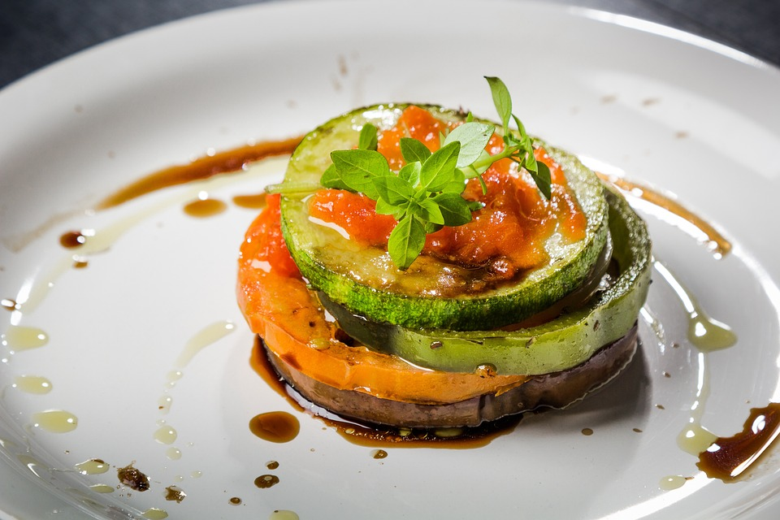

Binging with Babish Ratatouille Recipe

Description
Confit Byaldi made by Babish, inspired by the movie Ratatouille
Ingredients
- 6 large roma tomatoes, divided
- 2 red bell peppers, seeded and left whole
- 1/2 cup vegetable stock
- 1/2 cup water
- 2 sprigs rosemary, picked, divided
- 2 sprigs thyme, picked
- 1 clove garlic
- 1/2 small onion
- 3 Tbsp olive oil, divided
- 2 medium green squash
- 2 medium yellow squash
- 2 medium Japanese eggplants
- 1 tsp kosher salt
- 1 tsp freshly ground pepper
- 5 leaves fresh parsley, torn
Steps
- Cut a small “X” into the bottom of 4 of the roma tomatoes, and prepare both a pot of boiling water and a large bowl of ice water. Blanch the tomatoes for less than one minute, until cuts just begin to split up the sides of the tomatoes. Remove immediately and place in the ice bath, and allow to cool completely. Set aside.
- Set a large stovetop gas burner to high, and place two bell peppers directly on the grate over the flame. Allow to char completely before flipping, and blackening on all sides. Remove from heat and cover with tin foil for about 5 minutes, until softened. Peel off skins and place in a high-powered blender or food processor, along with remaining tomatoes, the picked leaves of one rosemary sprig, thyme, garlic, onion, vegetable stock, water, and 1 tablespoon olive oil. Blend on high speed until completely smooth.
-
See the rest of this recipe at bingingwithbabish.com